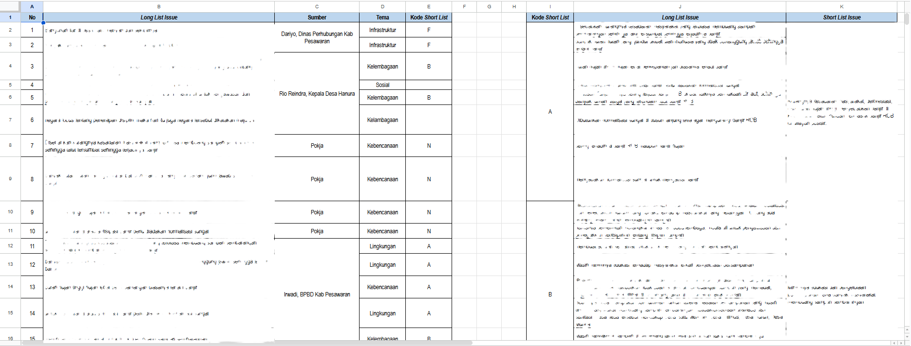
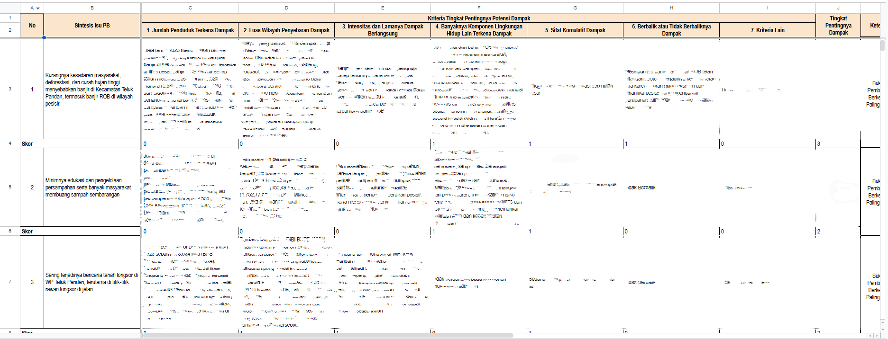
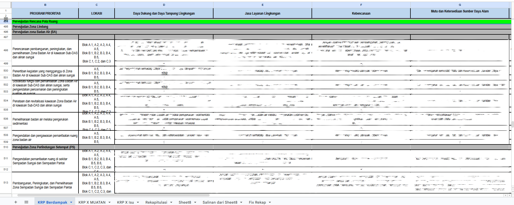
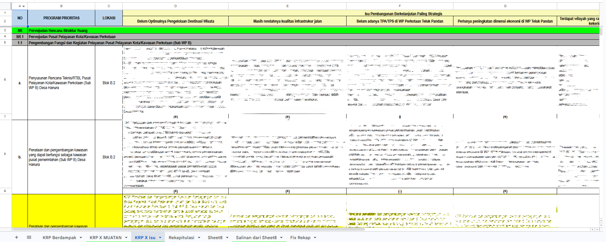
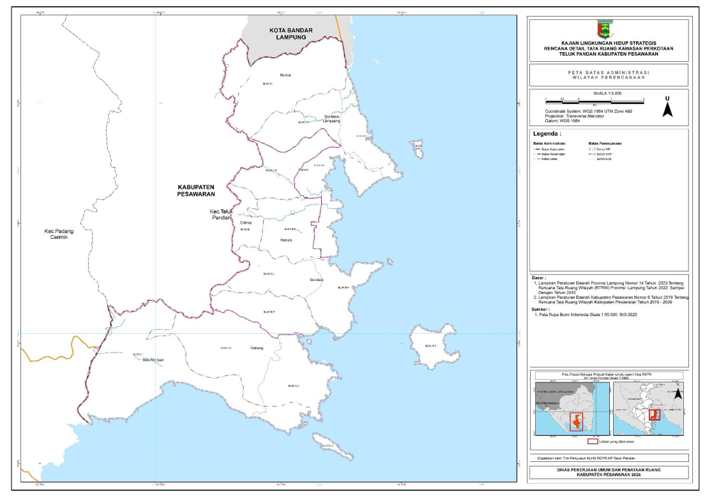
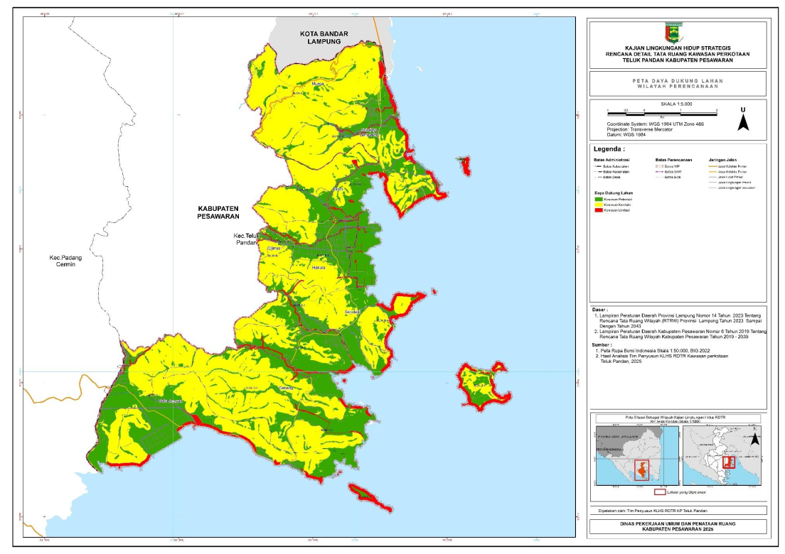

Kajian Lingkungan Hidup Strategis untuk RDTR Kawasan Perkotaan Teluk Pandan. Kontribusi saya berfokus pada pemeriksaan data, pengisian matriks uji silang muatan Kebijakan/Rencana/Program (KRP), dan penyusunan narasi teknis dokumen — bukan pembuatan peta, yang dikerjakan oleh tim.
Dokumen ini merupakan bagian dari Proyek Kajian KRP KLHS RDTR Kawasan Perkotaan Teluk Pandan, Kabupaten Pesawaran, yang disusun saat saya berkesempatan magang di Rekaspasial Indonesia. Hak cipta dokumen penuh tetap berada pada Rekaspasial dan Klien terkait. Peta pada halaman ini dikerjakan oleh tim; kontribusi saya ada pada pemeriksaan data, matriks, dan narasi.
Wilayah perencanaan mencakup Kecamatan Teluk Pandan yang terbagi ke dalam tiga Sub Wilayah Perencanaan (SWP) dan sepuluh desa/kelurahan.
Inti pekerjaan saya di proyek ini: menautkan tiap muatan KRP dengan isu pembangunan berkelanjutan dan tujuh kriteria tingkat penting dampak, lalu memeriksa konsistensinya. Potongan di bawah ditampilkan sebagian karena dokumen bersifat internal dan pra-validasi.




Peta berikut disusun oleh tim GIS Rekaspasial dan menjadi dasar spasial bagi analisis yang saya kerjakan. Ditampilkan di sini sebagai konteks, bukan sebagai hasil kerja saya.


Asisten Perencanaan (Magang) · Rekaspasial Indonesia
Juni 2025 – Desember 2025